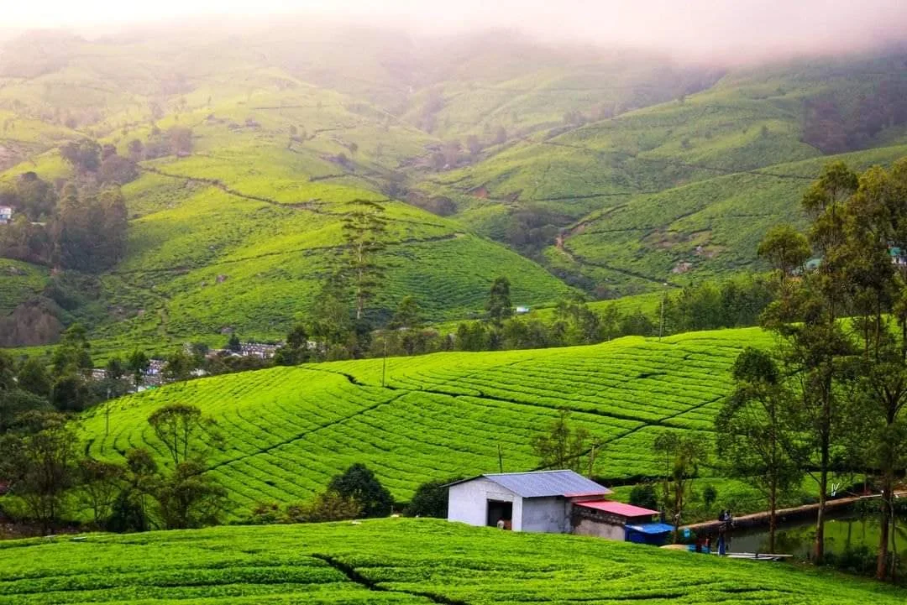
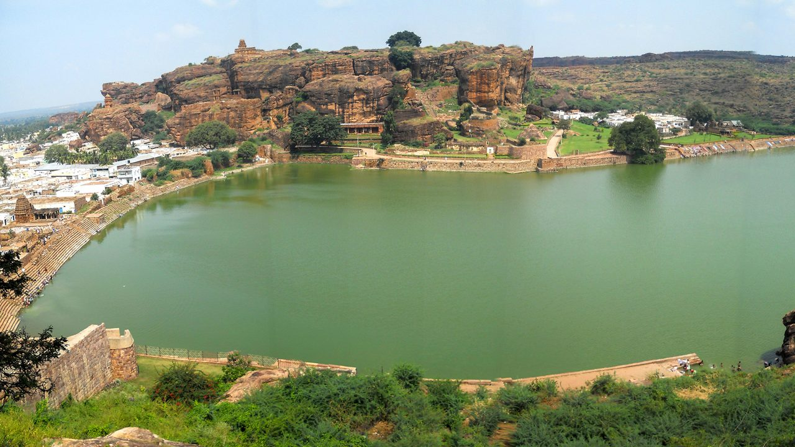
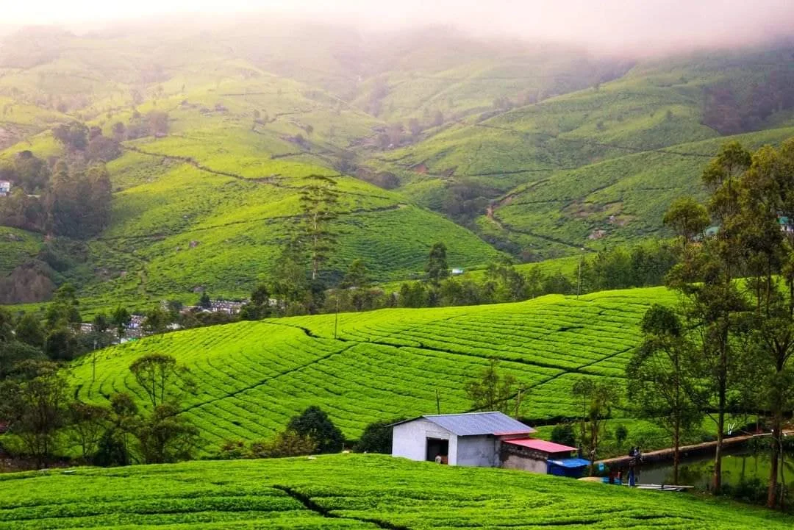
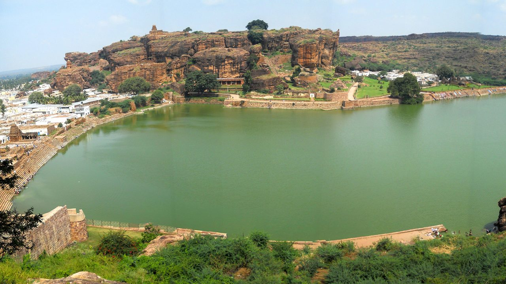

Welcome to the enchanting realm of Kerala, where the heart and essence of this divine land reside in its scenic landscapes and heartwarming villages, each weaving an interesting tale of timeless traditions and vibrant cultures. Here, the rustic beauty remains untouched by the tides of industrialisation, preserving an authentic charm that beckons you to savour a serene and indigenous experience. The warmth of its people and the aroma of its flavourful cuisine add to the allure of Kerala, making it a destination where you can immerse yourself in vibrant traditions and unwind in the lap of nature.
Kerala's Historical Marvels
Delve into the historical wonders of Kerala, including the grandeur of the Mattancherry Palace, Shakthan Thampuran Palace, Bolgatty Palace, Palakkad Fort, Thalassery Fort, Bekal Fort, and Fort Kochi, each standing as a testament to the region's splendid past. In the heart of Kochi, the Kerala Folklore Museum showcases a rich tapestry of the state's cultural, artistic, and architectural heritage...
A Paradise for Nature Lovers
Kerala's lush landscapes invites you to explore its mesmerising beauty, visit Munnar, an idyllic destination to immerse in the region's natural allure. Amidst majestic mountains and evergreen forests...
Go on a Spiritual Journey Through Kerala
Kerala houses a multitude of revered religious sites that draw devotees from various faiths and backgrounds. In the district of Thrissur, the town of Guruvayoor is renowned for its illustrious Guruvayoor Temple...
Art Forms Reflecting Rich Culture
You are in for a memorable treat if you’re an art lover, as Kerala is renowned for its vibrant artistic expressions. Its art and cultural forms encompass classical performances, age-old rituals, religious expressions, enchanting folk tales, and martial arts...
Charismatic Cuisine of Kerala
Kerala's culinary delights offer a rich array of both vegetarian and non-vegetarian dishes, featuring an exquisite blend of fish, meat, poultry, and rice preparations...
Kerala's Festive Kaleidoscope
Kerala, being called the God’s Own Country, celebrates several important and fascinating festivals. Onam, a vibrant 10-day harvest festival, unfolds during August-September...
 


